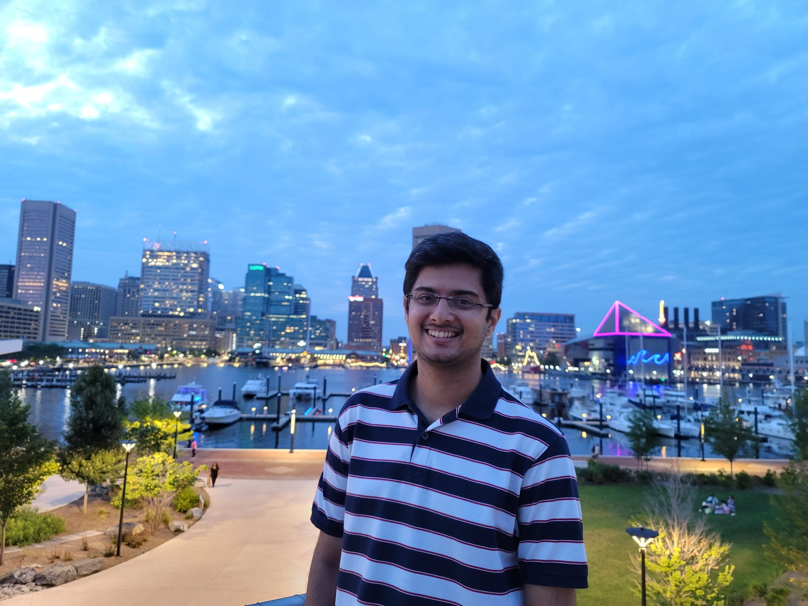

|
Jay N Paranjape
I am a PhD student at the Johns Hopkins University, working with Dr. Vishal M. Patel. I study Computer Vision, Machine Learning, and AI. More specifically, I am interested in developing innovative solutions to overcome challenges involved when translating models to niche applications like Healthcare.
Previously, I worked as a Data and Applied Scientist at Microsoft. Before that, I received my Bachelor's in Computer Science from IIT Delhi, India in 2021. During this time, I worked closely with Dr. Chetan Arora and AIIMS Delhi on Computer Assisted Tumor Detection. I have also worked with Dr. Vinay Ribeiro on applications of ML in Cybersecurity.
Email /
CV /
Google Scholar /
Github /
LinkedIn
|

|
News
- November, 2023 - 1 abstract accepted for Poster Presentation at ACS Surgeons and Engineers Meet 2024 .
- October, 2023 - 1 abstract accepted for Oral Presentation at ACS Surgeons and Engineers Meet 2024 .
- June, 2023 - 1 paper accepted at MICCAI 2023 .
- August, 2023 - Joined Johns Hopkins University for my PhD.
- August, 2022 - Joined Johns Hopkins University for my Masters.
Teaching
Teaching Assistant: Big Data in Machine Learning Fall 2023, Carey Business School, Johns Hopkins University
|